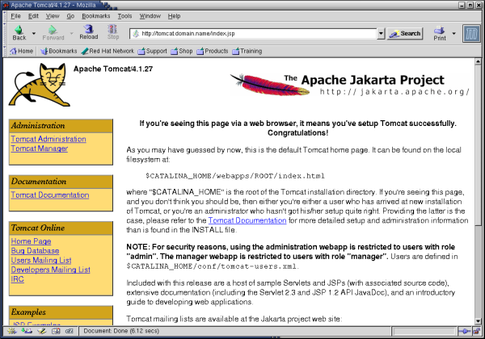

4. Installing Tomcat
Download a binary distribution of Tomcat from the Apache Jakarta website:
http://jakarta.apache.org/tomcat/ |
If you don't want to run the Tomcat daemon as root, create a new user/group tomcat (first make sure that the UID and GID you use are still available by checking the files /etc/passwd and /etc/group):
groupadd -g 220 tomcat useradd -u 220 -g tomcat -c "Tomcat" -r -d /usr/local/tomcat -s "/sbin/nologin" tomcat |
 | You really should not use the root account to run the Tomcat daemon; (using Tomcat version 4.1.27) we found out that this allows the MMBase admin user to write backup dumps of his sites anywhere on the system. |
<TODO: better solution available?>
Extract the Tomcat distribution in a new directory:
cd /usr/local/ tar -zxvf .../jakarta-tomcat-xxx.tar.gz |
 | Version 4.1.27 came with a hot-fix:
|
Change the ownership of the Tomcat directory and make it available as /usr/local/tomcat/:
chown -R tomcat:tomcat /usr/local/jakarta-tomcat-xxx ln -s /usr/local/jakarta-tomcat-xxx /usr/local/tomcat |
Open up the firewall for web access to the Tomcat server by adding to the file /etc/sysconfig/iptables:
-A RH-Lokkit-0-50-INPUT -p tcp -m tcp --dport 8080 --syn -j ACCEPT |
You need to reboot your system to make this rule effective or restart the iptables firewall:
service iptables restart |
 | Since (for some odd reason) some network managers allow outgoing web connections only to TCP port 80, there might be people around that cannot access your Tomcat (and MMBase) server through port 8080. Further below we will explain how to install a JK 2 mapping or a reverse proxy in Apache, so Tomcat and MMBase can be accessed through the Apache web server at port 80. Apart from the port issue, this has the advantage that you can use Apache to manage you SSL connections and use your existing Apache logs and statistics facilities for Tomcat and MMBase as well. If you decide to use Apache as a front-end to your Tomcat and MMBase server, there's no need to open up port 8080 in your firewall. |
To run Tomcat, set the $CATALINA_HOME environment variable:
CATALINA_HOME=/usr/local/tomcat |
and fire it up:
/usr/local/tomcat/bin/startup.sh |
Now you can access Tomcat's home page through (replace <hostname> with your hostname):
http://<hostname>:8080/ |
which should give you the Tomcat welcome screen.

To shutdown again:
/usr/local/tomcat/bin/shutdown.sh |
Since we want to automate the starting up and shutting down of the Tomcat server, we create a file /etc/rc.d/init.d/tomcat to do this for us:
#!/bin/sh
#
# Startup script for the Jakarta Tomcat Java Servlets and JSP server
#
# chkconfig: - 85 15
# description: Jakarta Tomcat Java Servlets and JSP server
# processname: tomcat
# pidfile: /var/run/tomcat.pid
# config:
# Source function library.
. /etc/rc.d/init.d/functions
# Source networking configuration.
. /etc/sysconfig/network
# Check that networking is up.
[ ${NETWORKING} = "no" ] && exit 0
# Set Tomcat environment.
export JAVA_HOME=/usr/local/j2sdk
export CLASSPATH=.:/usr/local/j2sdk/lib/tools.jar:/usr/local/j2re/lib/rt.jar
export CATALINA_HOME=/usr/local/tomcat
export CATALINA_OPTS="-server -Xms64m -Xmx512m -Dbuild.compiler.emacs=true"
export PATH=/usr/local/j2sdk/bin:/usr/local/j2re/bin:$PATH
[ -f /usr/local/tomcat/bin/startup.sh ] || exit 0
[ -f /usr/local/tomcat/bin/shutdown.sh ] || exit 0
export PATH=$PATH:/usr/bin:/usr/local/bin
# See how we were called.
case "$1" in
start)
# Start daemon.
echo -n "Starting Tomcat: "
/usr/local/tomcat/bin/startup.sh
RETVAL=$?
echo
[ $RETVAL = 0 ] && touch /var/lock/subsys/tomcat
;;
stop)
# Stop daemons.
echo -n "Shutting down Tomcat: "
/usr/local/tomcat/bin/shutdown.sh
RETVAL=$?
echo
[ $RETVAL = 0 ] && rm -f /var/lock/subsys/tomcat
;;
restart)
$0 stop
$0 start
;;
condrestart)
[ -e /var/lock/subsys/tomcat ] && $0 restart
;;
status)
status tomcat
;;
*)
echo "Usage: $0 {start|stop|restart|status}"
exit 1
esac
exit 0
|
Set its ownership and access rights:
chown root:root /etc/rc.d/init.d/tomcat chmod 755 /etc/rc.d/init.d/tomcat |
And add this init script to chkconfig:
chkconfig --add tomcat chkconfig tomcat on |
| Instead of creating your own init script, you can use the script that comes with the Tomcat package: /usr/local/tomcat/bin/catalina.sh. Make sure you set the Tomcat environment at the start of this script. Or create a short init script that calls the original Tomcat init script. |
| To install two (or even more) versions of Tomcat server on the same system, increase the port numbers of the second server (e.g. by 10), by editing the configuration file /usr/local/tomcat55/conf/server.xml:
Complete this second Tomcat server installation as above for the first server, using adjusted directory and file names. |